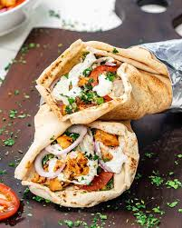

Doner Kebab

Description
Turkish origin made of meat cooked on a vertical rotisserie.
Seasoned meat stacked in the shape of an inverted cone is turned slowly on the rotisserie, next to a vertical cooking element.
The modern sandwich variant of doner kebab originated and was popularized in 1970s West Berlin by Turkish immigrants.
This was recognized by the Berlin-based Association of Turkish Döner Manufacturers in Europe in 2011.
Ingredients
- 1 teaspoon flour
- 1 teaspoon dried oregano
- 1/2 teaspoon salt
- 1/2 teaspoon garlic powder
- 1/2 teaspoon onion powder
- 1/2 teaspoon dried herb seasoning
- 1/4 teaspoon ground black pepper
- 1/4 teaspoon cayenne pepper
- 1 pounds ground lamb
Steps
- Preheat the oven to 175 degrees C
- Combine flour, oregano, salt, garlic powder, onion powder, Italian seasoning, black pepper, and cayenne pepper in a large bowl. Add ground lamb and knead until thoroughly mixed together, about 3 minutes.
- Shape seasoned lamb mixture and place into a loaf pan; set on top of a baking sheet.
- Bake in the preheated oven, turning halfway to ensure even browning, for about 1 hour and 20 minutes.
- Wrap loaf in aluminum foil and let rest for about 10 minutes. Slice as thinly as possible to make doner kebab pieces.